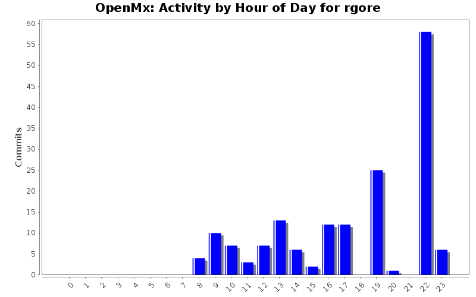
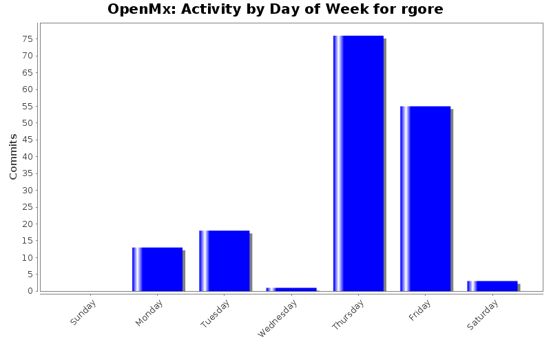
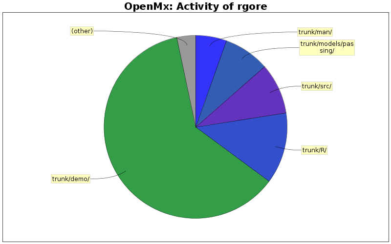

| Directory | Changes | Lines of Code | Lines per Change |
|---|---|---|---|
| Totals | 166 (100.0%) | 3577 (100.0%) | 21.5 |
| trunk/demo/ | 63 (38.0%) | 2202 (61.6%) | 34.9 |
| trunk/R/ | 18 (10.8%) | 450 (12.6%) | 25.0 |
| trunk/src/ | 4 (2.4%) | 323 (9.0%) | 80.7 |
| trunk/models/passing/ | 21 (12.7%) | 287 (8.0%) | 13.6 |
| trunk/man/ | 16 (9.6%) | 198 (5.5%) | 12.3 |
| trunk/ | 36 (21.7%) | 55 (1.5%) | 1.5 |
| trunk/docs/source/ | 6 (3.6%) | 47 (1.3%) | 7.8 |
| trunk/docs/source/openmx_theme/static/ | 1 (0.6%) | 11 (0.3%) | 11.0 |
| trunk/docs/source/openmx_theme/ | 1 (0.6%) | 4 (0.1%) | 4.0 |

Bumping up version numbers for Beta Relase 999.0.0-2126
4 lines of code changed in 2 files:
Updated to specify default value for connect=.
2 lines of code changed in 1 file:
updates to man pages to incur less warnings/errors when 'make check' is run
25 lines of code changed in 3 files:
Adding example that takes advantage of the OpenMx Sphinx theme.
30 lines of code changed in 2 files:
Added an OpenMX theme to Sphinx/reST to enable code-blocks with different colored backgrounds in the documentation.
21 lines of code changed in 4 files:
Updates to enable mxVersion to give the build number on every commit.
7 lines of code changed in 3 files:
Adding function mxBuild to MxVersion.R. mxBuild prints the current svn build number.
4 lines of code changed in 1 file:
Experimenting with using the keyword Rev in svn to provide all users with version number.
1 lines of code changed in 1 file:
Prepping version # for 1.2 beta release.
4 lines of code changed in 4 files:
Updating version # and date info for 1.2 beta release.
5 lines of code changed in 4 files:
Fixed a typo in one of the examples.
1 lines of code changed in 1 file:
Changed an omxCheckCloseEnough to omxCheckWithinPercentError.
2 lines of code changed in 1 file:
Added more detailed information to mxMatrix warnings and errors. The new info will specify the exact call to mxMatrix that caused the warning or error. Also added omxCheckWarning, which behaves just like omxCheckError but for warning messages.
278 lines of code changed in 10 files:
Added flag, -mmacosx-version-min=10.4 ,to ensure backwards compatability for Mac OS 10.4 and 10.5.
2 lines of code changed in 1 file:
Updated changes to reflect mxAlgebra man page updates.
1 lines of code changed in 1 file:
3 lines of code changed in 1 file:
Updated CHANGES file to include documentation of the user guide updates reflecting the new 'connect' slot in mxPath.
1 lines of code changed in 1 file:
Updating Man pages and User Guide examples and documentation to reflect the new connect slot in mxPath.
24 lines of code changed in 3 files:
updated changes file to reflect 'connect' argument updates in mxPath function.
1 lines of code changed in 1 file:
The changes in MxRAMModel.R and MxPath.R reflect the new connect slot which replaces the deprecated all slot in MxPath. The remaining changes affect documentation and edits to test cases and demos replacing all with connect appropriately.
306 lines of code changed in 25 files:
(20 more)